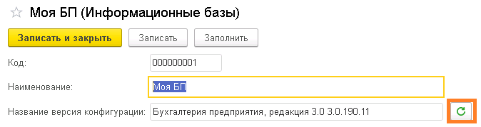
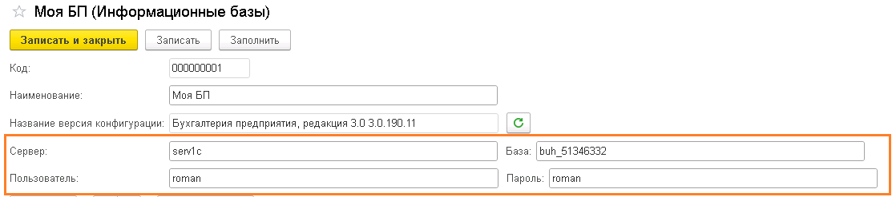
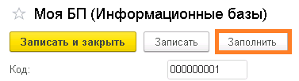
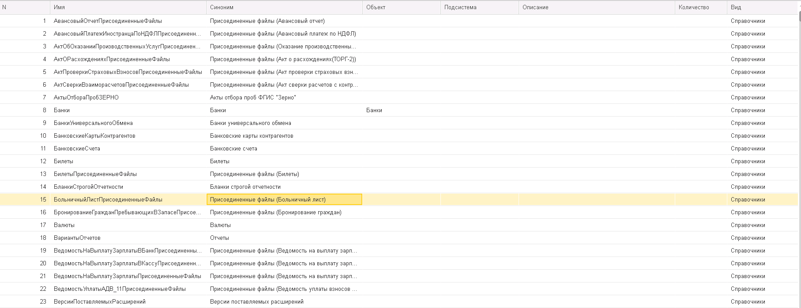
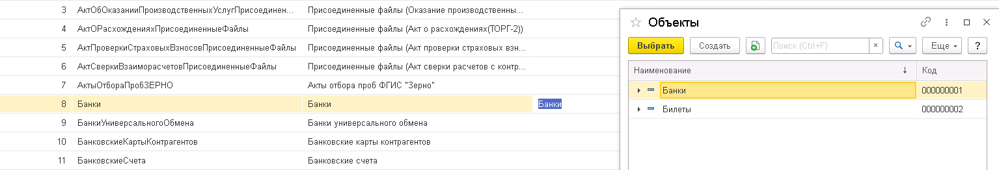
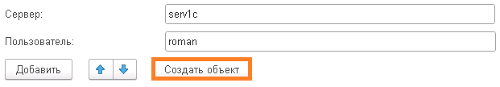

Справочник Информационные базы
Название конфигурации
Реквизиты:
- Название версии конфигурации
Формируется атоматически при нажатии кнопки Обновить версию конфигурации

Заполнение Табличной части (ТЧ)
Для заполнение ТЧ, необходимо заполнить поля:
Реквизиты:
- Сервер
- Пользователь
- База
- Пароль

для подключения к Базе Источник
После нажатия кнопки Заполнить

Заполниться ТЧ
Реквизиты:
- Имя - программное название
- Синоним - пользовательское название
- Объект - справочник Объекты, содержит детальную информацию об объекте конфигурации
- Подсистема - справочник Подсистемы, раздел учета
- Описание - назначение
- Количество - кол-во созданных элементов
- Вид - Справочник, документ, регистр

Создание Объектов Конфигурации Источник
Колонка ТЧ Объект, содержит элемент справочник Объекты,
Объект можно выбрать из списка

или создать новый, нажав кнопку Создать объект

Справочник Объекты
Реквизиты:
- Родитель -
- Наименование -
- Идентификатор -
- Вид -
- Изменен -
- Подсистема -
- Информационная база -
Заполнение Табличной части (ТЧ)
Необходимо нажать кнопку Заполнить